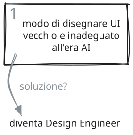
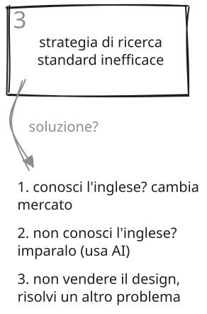

Il problema del Junior Designer da quando c'è AI
Sono rimasto in contatto con parecchi miei ex studenti del corso di UX/UI Design che ho insegnato in Boolean. Mi raccontano come va, i problemi che incontrano.
3 sfide per il Junior Designer di oggi
- Non sa bene come usare l'AI per disegnare interfacce.
- Non ha un portfolio lavori forte (come è normale che sia).
- Non ha una strategia di ricerca del lavoro efficace (spoiler: la strategia "creare un buon profilo LinkedIn e applicare per posizioni Junior" non lo è).



Le tre cose stanno sullo stesso piano: diventare Design Engineer è la base, ma portfolio e strategia di ricerca sono parte del corso, con esercitazioni e consegne come tutto il resto. Se rispondo del risultato, rispondo anche di come ci si arriva.
FAQ
Che differenza c'è tra UX/UI Designer e Design Engineer?
- La differenza è nell'uso di AI e dell'output. Il Design Engineer segue un processo preciso, non fa vibe coding, AI è un tool non una black box che quasi per magia tira fuori una soluzione.
- Lo UX/UI Designer di solito lavora in Figma, il Design Engineer consegna prototipi funzionanti nel browser (o qualsiasi altra tecnologia prevista dal progetto).
- Il Design Engineer non deve saper programmare, ma ha competenze sugli aspetti tecnici del frontend di un'app e conosce gli strumenti abituali di sviluppo frontend come Git e GitHub, per esempio.
- Il Design Engineer è visto dal team di sviluppo come un elemento "interno", quello che consegna prototipi funzionanti e che possono essere integrati nel flusso di sviluppo, mentre lo UX/UI Designer di solito viene visto come un elemento "esterno", quello che consegna i "mockup".